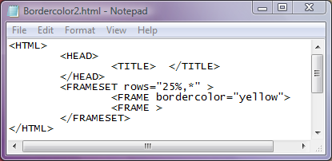
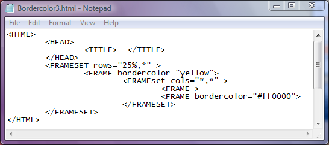

Atributul bordercolor
Atributul bordercolor seteaza culoarea chenarului cadrului. Valorile acestui atribut sunt fie un nume
valid de culoare in limba engleza, fie o culoare definita prin codul ei hexazecimal cu sintaxa "#RRGGBB".
In continuare vom ilustra doua exemple de pagini web avand cadre cu chenare colorate. Click pe cod pentru a deschide
pagina web...

In continuare un al doilea exemplu...

Inapoi la Cadre....